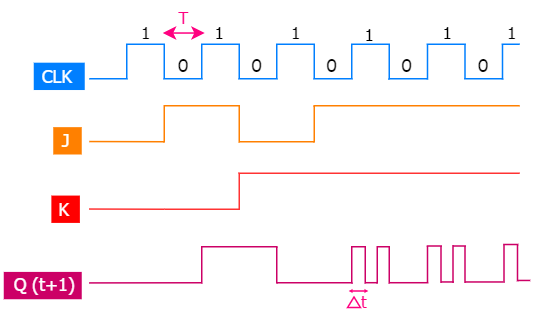
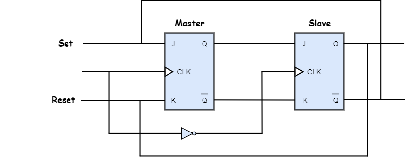
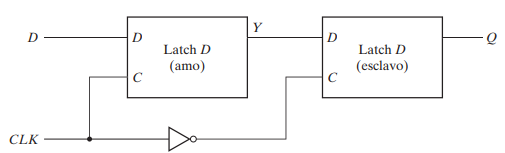
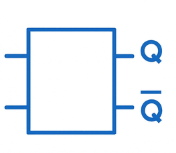
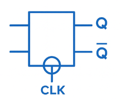
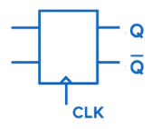
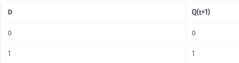
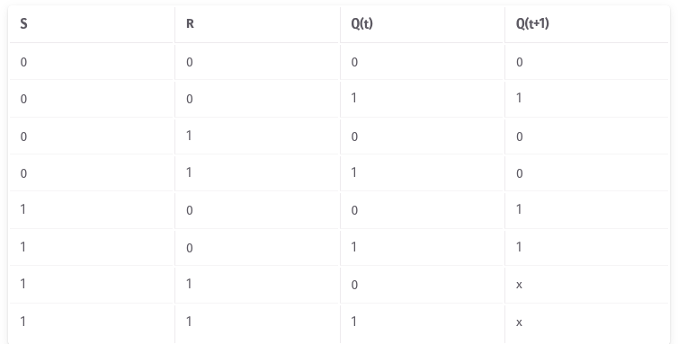
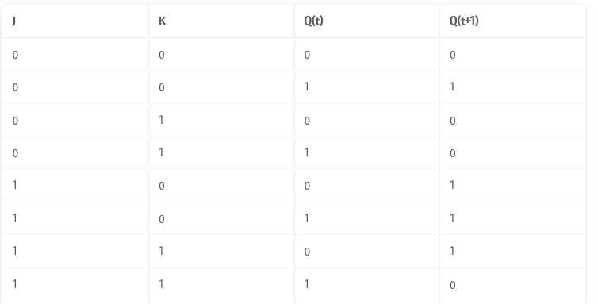
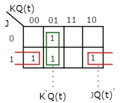

En el contexto de flip-flops tipo JK, una race-around condition ocurre cuando:
Ambas entradas J y K están en alto (1),
El pulso de reloj (clock pulse) tiene una duración mayor que el tiempo de propagación interno del flip-flop.
Esto provoca que la salida cambie repetidamente entre 0 y 1 dentro del mismo ciclo de reloj, dando una oscilación inestable.
Por eso se llama “condición de carrera”: el 0 y el 1 “compiten” (o “corren”) para establecer el valor final.

Configuración Maestro - Esclavo
El primer flip-flop se llama maestro (master), y es controlado por el ciclo positivo del reloj.
El segundo flip-flop se llama esclavo (slave), y es controlado por el ciclo negativo del reloj.
Durante el ciclo positivo del reloj, el flip-flop maestro genera una salida intermedia, pero el flip-flop esclavo no produce la salida final.
Durante el ciclo negativo del reloj, el flip-flop esclavo se activa y copia la salida previa del flip-flop maestro, generando así la salida final.

Configuración Maestro - Esclavo
Cuando el pulso vuelva a 0, el amo quedará inhabilitado y aislado de la entrada. Al mismo tiempo, el esclavo estará habilitado y el valor de el maestro se transferirá a la salida Q del flip-flop. Así, la salida del flip-flop sólo puede cambiar durante la transición del reloj de 1 a 0.
El comportamiento del flip-flop amo-esclavo que acabamos de describir implica que la salida sólo puede cambiar durante el borde negativo del reloj
Latch D - Maestro Esclavo

Resumen Latches y Flip-Flops
Latch
Latch - Control
Flip-Flops Maestro - Esclavo



Ecuaciones Características
Las propiedades lógicas de un flip-flop descritas en la tabla característica también se pueden expresar algebraicamente con una ecuación característica
En el caso del flip-flop D, tenemos la ecuación característica:
Q(t+1)=D

Ecuaciones Características
Q(t + 1) = S + R'.Q(t)

Ejercicio
Encontrar la ecuación característica de un latch JK

Ejercicio
Encontrar la ecuación característica de un latch JK
Q(t + 1) = JQ(t)' + K'Q(t)

Entradas Asíncronas
Un flip-flop normal (como D, JK o T) cambia su estado solo cuando el reloj realiza una transición (por ejemplo, de 0→1 o de 1→0).
Pero algunos flip-flops incluyen entradas asíncronas llamadas comúnmente:
Preset (PR) o Set (S) → fuerza la salida Q = 1
Clear (CLR) o Reset (R) → fuerza la salida Q = 0
Estas entradas tienen prioridad sobre el reloj y las demás entradas.